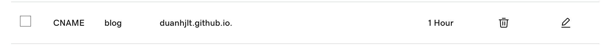

00 安装Hugo
到 Hugo Releases 下载对应的操作系统版本的 Hugo 二进制文件
Mac 下可以直接使用 Homebrew 安装：
$ brew install hugo
01 生成站点
使用 Hugo 快速生成站点
$ hugo new site /path/to/site
这样就在 /path/to/site 目录里生成了初始站点，进入目录：
$ cd /path/to/site
02 安装主题
到 主题列表 挑选主题，找到相关的 GitHub 地址，创建目录 themes, 把主题 clone 下来
$ git clone https://github.com/adityatelange/hugo-PaperMod.git themes/PaperMod
在配置文件中设置主题名字
theme: PaperMod
03 配置文件
Hugo 默认使用的 toml 格式的配置文件，也支持 yaml 格式。 详细说明可以参考 Hugo的官方文档
示例配置 config.yaml 如下
baseURL: 'https://blog.duanhjlt.com/'
theme: 'PaperMod'
languageCode: 'zh-cn'
languageName: '简体中文'
hasCJKLanguage: true
title: 'CrazyKids's Blog'
paginate: 15
summaryLength: 120 # 文章概览的自字数，默认70
author:
name: 'duanhongjin'
email: 'duanhjlt@163.com'
link: 'https://blog.duanhjlt.com/'
enableInlineShortcodes: true
enableEmoji: true
enableRobotsTXT: true
buildDrafts: false
buildFuture: false
buildExpired: false
googleAnalytics: UA-123-45
minify:
disableXML: true
# minifyOutput: true
menu:
main:
- weight: 1
identifier: 'post'
name: '文章'
url: '/'
- weight: 2
identifier: 'tags'
name: '标签'
url: '/tags/'
- weight: 3
identifier: 'categories'
name: '分类'
url: '/categories/'
- weight: 4
identifier: 'about'
name: '关于'
url: '/about/'
outputs:
home:
- HTML
- RSS
- JSON
params:
env: production # to enable google analytics, opengraph, twitter-cards and schema.
author: duanhongjin
defaultTheme: auto # defaultTheme: light or dark
disableThemeToggle: false
DateFormat: "2006-01-02"
ShowShareButtons: true
ShowReadingTime: true
# disableSpecialistPost: true
displayFullLangName: true
ShowPostNavLinks: true
ShowBreadCrumbs: true
ShowCodeCopyButtons: true
hideFooter: false # 隐藏页脚
ShowWordCounts: true
VisitCount: true
ShowLastMod: true #显示文章更新时间
ShowToc: true # 显示目录
TocOpen: true # 自动展开目录
extendCodeBackground: false # 代码块是否自动横向展开
comments: true
socialIcons:
- name: github
url: "https://github.com/duanhjlt"
- name: RSS
url: "index.xml"
cover:
hidden: false # hide everywhere but not in structured data
hiddenInList: false # hide on list pages and home
hiddenInSingle: false # hide on single page
editPost:
URL: "https://github.com/duanhjlt/blog/tree/main/content"
Text: "Suggest Changes" # edit text
appendFilePath: true # to append file path to Edit link
markup:
highlight:
noClasses: false
04 启动博客
$ hugo server -D
本地预览，本地预览网址为 http://localhost:1313
$ hugo -F --cleanDestinationDir
生成全新的 public 文件夹，这个文件夹可以部署到云服务器上
05 写文章
$ hugo new new-post.md
hugo 会在 content 目录下生成"new-post.md"名字的文件，所有的文章都会放到 content 目录下
如何自己定义的子目录，如 posts，可以使用命令
$ hugo new posts/new-post.md
06 文章默认配置
生成文章内部文件头部配置信息包括一些文章名称，时间之类的信息，可以写到 archetypes/default.md 中做为模版，这样生成文章时会自动添加模版里的配置
示例配置如下:
---
keywords: []
title: '{{ replace .File.ContentBaseName "-" " " | title }}'
date: {{ .Date }}
lastmod: {{ .Date }}
draft: false
description:
author: 'duanhongjin'
tags: []
categories: []
tocLevels: ["h2", "h3", "h4"]
comments: true # 本页面是否显示评论
reward: true # 打赏
showToc: true # 显示目录
TocOpen: true # 自动展开目录
hidemeta: false # 是否隐藏文章的元信息，如发布日期、作者等
disableShare: true # 底部不显示分享栏
showbreadcrumbs: true #顶部显示路径
---
07 部署到GitHub Pages
在 GitHub 上创建仓库，名字可以是 duanhjlt.github.io，也可以是其他的，在 GitHub Pages 进行设置即可
如果想使用自己的域名，如本站域名 blog.duanhjlt.com，可以
- 在 dns 增加 blog 到 duanhjlt.gihub.io. 的 CNAME 配置项 
- 在 GitHub 的仓库中增加 CNAME 文件，内容为
blog.duanhjlt.com
将 public 文件夹做为 GitHub Pages 的本地仓库，每次生成后，推送到 GitHub 上，GitHub Pages 就会自动部署了